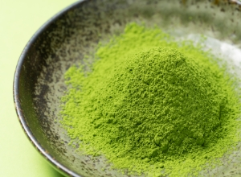
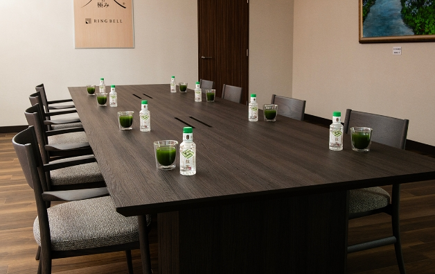
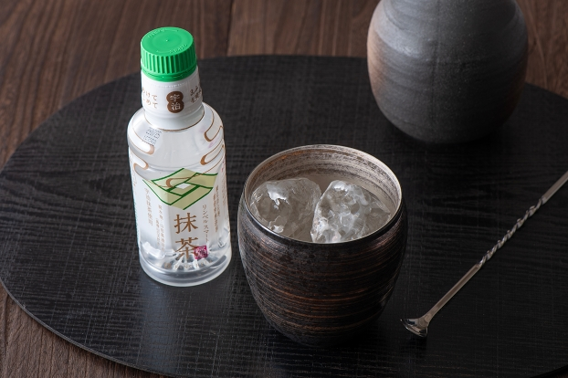

スマート抹茶
いつでも、どこでも、お好きな場面で、
あなたの抹茶を
ここが「極み」
- キャップをひねって振るだけで、いつでも「点（た）てたばかりの抹茶」をお楽しみいただけます
- 高級茶として名高い「宇治抹茶」と水の郷百撰にも選ばれた 「鳥海山」の天然水を使用
- 会議のようなビジネスシーンや、お酒の抹茶割りなど、多彩なシーンで活躍
キャップをひねって、振るだけ
いつでも、新鮮な「水点（た）て抹茶」の出来上がり
キャップをひねると密封されていた抹茶粉末が溶け出し、振って混ぜれば「水点（た）て抹茶」の出来上がり！ それがリンベルの「スマート抹茶」です。いつでも、どこでも、お手軽に新鮮な抹茶をお楽しみいただけます。
従来のペットボトルのお茶と異なり、保存料不使用
「味」と「栄養」を逃すことなく楽しめる
フタである「新SENキャップ」が、抹茶粉末を光や酸素からしっかり保護するから、酸化防止剤などの保存料を一切不使用。お茶本来の味、香りが際立つことはもちろん、従来のペットボトルのお茶では摂取が難しかった脂溶性栄養素（食物繊維やβカロチン、ビタミン）も逃すことがありません。 カテキン、タンニンなどが豊富に含まれ、美容、健康に良いことで知られるお茶のパワーをたっぷりお楽しみください。
高級茶「宇治抹茶」と、水の郷百撰にも選ばれた
「鳥海山」の天然水
抹茶は、高級茶として名高い宇治の抹茶を贅沢に使いました。静岡茶、狭山茶と並んで日本三大茶のひとつに挙げられる、「お茶の本場」京都が誇る逸品です。 そして水は、水の郷百選に選ばれる鳥海山の天然水。「出羽富士」と呼ばれ、年間降水量が多いことで知られる鳥海山の雨や雪が、数年から数十年をかけて地中で磨かれた伏流水は、豊富なミネラルを含んでいます。

SCENE.1 ビジネスで
大切な顧客との商談に、特別な飲み物に
ビジネスシーンでは大切なお客様との商談に。見慣れた普通のペットボトルのお茶とは違ったお茶だから、お客様への特別な思いが伝わります。「キャップをひねって振る」一手間が、会話のきっかけとなり、アイスブレイクの効果も期待できます。

SCENE.2 お酒の席で
贅沢なお酒の抹茶割りに
「点（た）てたばかり」の新鮮な抹茶は、味も別格。その魅力を存分に楽しむなら、お酒の抹茶割りがおすすめです。出来合いのお茶で作るのとはまるで違う、お茶本来の香りと味を堪能できる特別な一杯です。
